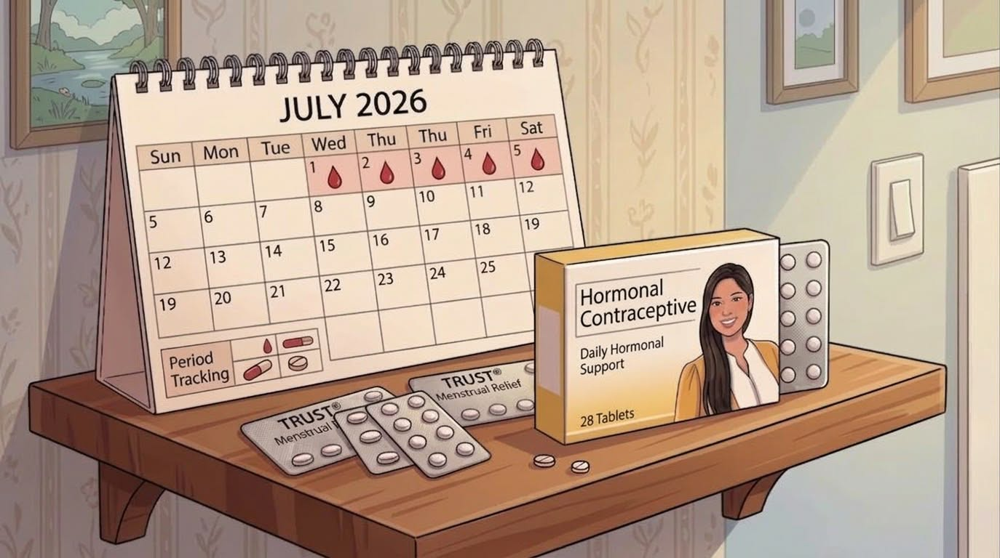
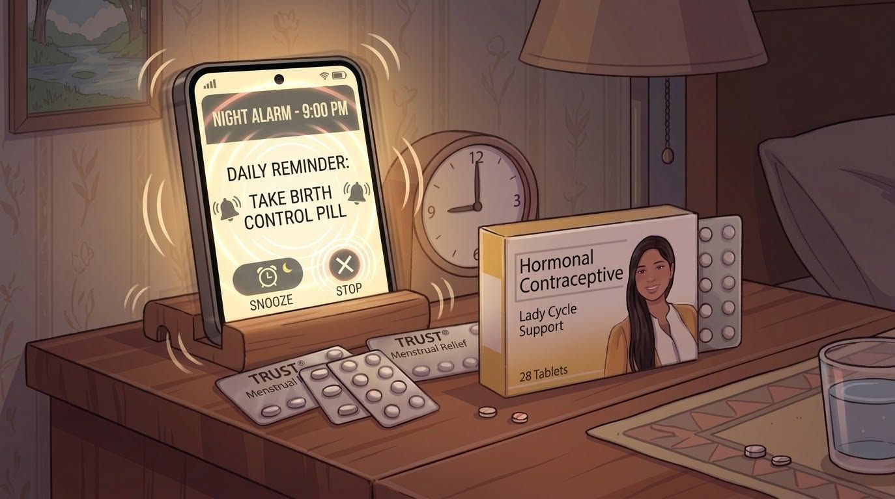
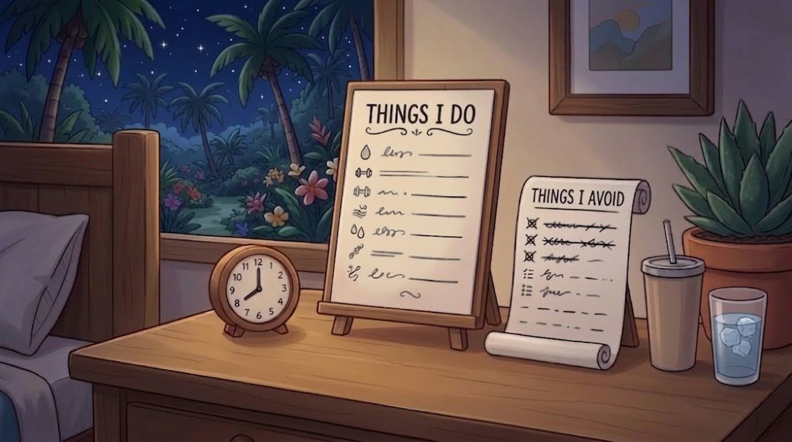

My Personal Guide to Birth Control Pills and Cycle Tracking
My personal experience, daily routine, and menstrual cycle tracking
from July to August 2026
About Me
Figure 1: Anabelle Mandeoya and family.
My name is Anabelle Mandeoya. I am a student,
a mother, and a partner. I have one daughter named Alexianna,
and I live happily and contentedly with my little family.
A Little About My Family
My daughter is six years old, and my partner Alex is currently
28 years old. My family is one of the important parts of my
life and gives me motivation as I continue studying and
working toward my goals.
My Experience with Birth Control Pills
Figure 2: My journey and experience with contraceptive pills.
I started taking contraceptive pills in 2020. After giving
birth, I initially used a Trust pill intended for breastfeeding.
After I stopped breastfeeding, I eventually switched to Lady,
which is the combined oral contraceptive pill that I currently use.
I have been using contraceptive pills for several years.
Based on my personal experience, I have been comfortable with
my routine and have not personally experienced health
complications that I associate with taking the pills.
However, everyone's body and experience can be different.
My experience should not be considered a guarantee that
another person will have the same results.
Why I Track My Pills
I use a simple numbering system to help me remember which
tablet I need to take each day. This makes it easier for me
to keep track of my 28-tablet pack and maintain my daily
routine.
The Pill I Currently Use
Figure 3: The Lady combined oral contraceptive pill pack.
The contraceptive pill I currently use is Lady. Its active
ingredients are ethinyl estradiol and levonorgestrel.
Product Information
Brand: Lady
Active Ingredients: Ethinyl Estradiol and Levonorgestrel
Strength: 30 mcg / 150 mcg
Type: Combined hormonal oral contraceptive
Tablets in One Pack: 28 tablets
Hormonal Tablets: 21 tablets
Non-Hormonal Tablets: 7 tablets
The 28-tablet pack contains 21 hormonal tablets followed by
7 non-hormonal tablets. I use the numbers on my tracking method
to keep track of my place in the pack.
My Daily Pill Routine
Figure 4: My nighttime routine for taking the pill consistently.
I usually take my pill every night before going to sleep.
Taking it as part of my nighttime routine helps me remember
to take it every day.
My 28-Day Tracking Method
I use numbers from 1 to 28 to keep track of which tablet
I should take on each day of the pack.
Start with tablet number 1.
Take one tablet according to the product instructions.
Move to the next number on the following day.
Continue tracking the tablets until number 28.
Prepare the next pack according to the instructions for the product.
Consistency is important to my routine.
I use my tracking method and daily habits to help me remember
my tablets.
My July–August 2026 Pill Tracking
Figure 5: Calendar tracking for July to August 2026 tablets.
I started tablet number 1 on July 21, 2026. I continued
counting the tablets each day until tablet number 28 on
August 17, 2026.
My Tracking Dates
July 21, 2026 - Pill #1
July 22, 2026 - Pill #2
July 23, 2026 - Pill #3
July 24, 2026 - Pill #4
July 25, 2026 - Pill #5
July 26, 2026 - Pill #6
July 27, 2026 - Pill #7
July 28, 2026 - Pill #8
July 29, 2026 - Pill #9
July 30, 2026 - Pill #10
July 31, 2026 - Pill #11
August 1, 2026 - Pill #12
August 2, 2026 - Pill #13
August 3, 2026 - Pill #14
August 4, 2026 - Pill #15
August 5, 2026 - Pill #16
August 6, 2026 - Pill #17
August 7, 2026 - Pill #18
August 8, 2026 - Pill #19
August 9, 2026 - Pill #20
August 10, 2026 - Pill #21
August 11, 2026 - Pill #22
August 12, 2026 - Pill #23
August 13, 2026 - Pill #24
August 14, 2026 - Pill #25
August 15, 2026 - Pill #26
August 16, 2026 - Pill #27
August 17, 2026 - Pill #28
This tracking list represents my personal method of
keeping track of my tablets. It should not be used as a
substitute for the instructions provided with a specific
contraceptive product.
My Menstrual Cycle Tracking

Figure 6: Monitoring my menstrual cycle alongside my pill schedule.
I also use my tracking method to observe my menstrual cycle.
Based on my personal experience, my menstrual bleeding usually
occurs during the later part of my 28-day pill cycle and may
last around five to seven days.
During my menstrual bleeding, I continue following my pill
schedule according to the instructions for my contraceptive
product.
What I Have Observed
My menstrual cycle has been regular based on my experience.
I track my bleeding using a calendar.
I keep track of the tablet number at the same time.
I continue my pill routine during my menstrual bleeding.
Menstrual and withdrawal bleeding can vary from person to
person. The information in this section is based on my
personal tracking and experience.
When I Forget to Take a Pill

Figure 7: Reminders and steps when a pill is missed or delayed.
Although I normally take my pill every night, there may be
situations when a person forgets a tablet. The correct action
can depend on the type of pill, the number of tablets missed,
and where the person is in the pack.
If One Hormonal Pill Is Late or Missed
For combined oral contraceptive pills, current guidance
generally recommends taking one missed hormonal pill as soon
as it is remembered and continuing the remaining pills at
the usual time. This can sometimes mean taking two pills on
the same day.
If Two or More Hormonal Pills Are Missed
If two or more consecutive hormonal pills are missed, the
instructions are different. The person should follow the
instructions for the specific contraceptive product and
consider using a backup method as recommended by a qualified
healthcare professional.
Do not assume that every contraceptive pill has the same
missed-pill instructions.
If I am unsure what to do, I should check the product
information or ask a qualified healthcare professional.
Things I Do and Avoid

Figure 8: Personal guidelines on what to do and avoid.
Things I Do
I take my pill as part of my nighttime routine.
I keep track of my tablet number.
I monitor my menstrual cycle.
I keep my pills in a place where I can remember them.
I prepare for my next pack before I run out.
I check the instructions for my specific product when necessary.
Things I Avoid
I avoid intentionally skipping my daily pill.
I avoid losing track of my tablet number.
I avoid assuming that all contraceptive pills have identical instructions.
I avoid treating my personal experience as medical advice for everyone.
I avoid ignoring unusual symptoms or health concerns.